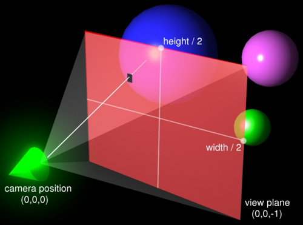

Lecture #9: Camera ray casting
Computer graphics in Game development
Ivan Belyavtsev
21.02.2020
Administrative
“Basics of rasterization” assignments
- Waiting for submission of “Basics of rasterization” assignments
- Official due date: Saturday, 22 February 2020, 12:00 AM
- Feel free to ask questions via Telegram or person
Administrative
Basics of ray tracing
- Separated template for labs and assignments: github.com/djbelyak/rt-template
- Official due date: Saturday, 21 March 2020, 12:00 AM
Administrative
Basics of ray tracing assignments (1 part)
- Ray generation
- Möller-Trumbore algorithm
- Lighting
- Shadow rays
- Reflection
- Refraction
Administrative
Basics of ray tracing assignments (2 part)
- Anti-aliasing
- Axis-aligned bounding box
- Bounding volume hierarchy
- (Optional) Denoising
Basics of rasterization recall
Idea
- Create a word as 3D polygons (triangles)
- Project the geometry to 2D plane
- Rasterize each peace of geometry
Basics of rasterization recall
Pros
- Great math underlying
- Low computational complexity
- Clear flow
Basics of rasterization recall
Cons
- Hard to compute lighting
- Hard to compute shadows
- Hell with blending and transparency
Ray tracing idea
Pinhole camera

{kind=link}
Generation camera rays
 [2]
Ray tracing scheme

“Ray generation” experiment
TODO
- Implement camera rays
- Implement miss function
“Ray generation” experiment
Reference
{kind=link}
“Ray generation” experiment
What is the new knowledge?
- Primary ray color defines color of pixel
- Primary rays make a camera frastrum
- Miss function returns background color
References
1. McGuire M. The graphics codex. 2.14 ed. Casual Effects, 2018.
2. Shirley P. Ray tracing in one weekend. second. Amazon.com Services LLC, 2019. Vol. 1.
3. Lefrançois M.-K., Gautron P. DX12 raytracing tutorial - part 2 [Electronic resource]. URL: https://developer.nvidia.com/rtx/raytracing/dxr/DX12-Raytracing-tutorial-Part-2.